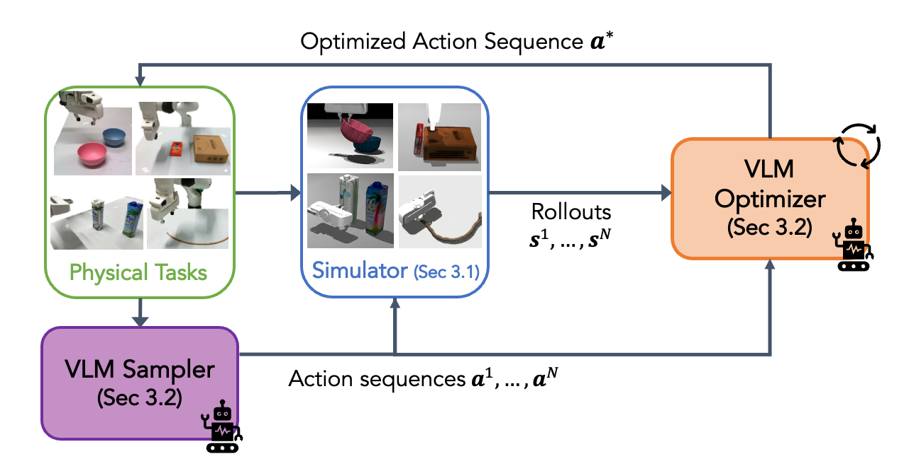
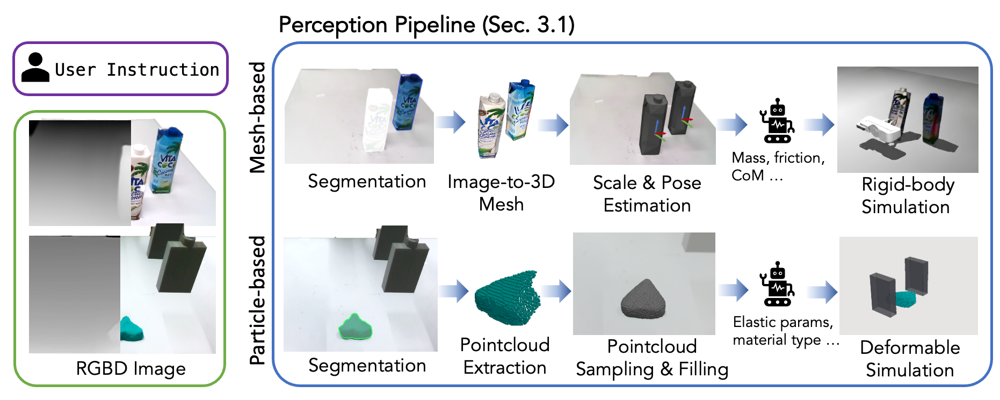

TL;DR: We present SIMPACT, a test-time, SIMulation-enabled ACTion Planning framework that equips Vision-Language Models (VLMs) with physical reasoning through simulation-in-the-loop world modeling, without requiring any additional training.
From a single RGB-D observation, SIMPACT efficiently constructs physics simulations, enabling the VLM to propose informed actions, observe simulated rollouts, and iteratively refine its reasoning in a physically grounded way.
Method Overview
Pipeline

Method pipeline. Our method first begins by instantiating a physics simulator given the real-world scene. Next, a VLM-based action sampler and optimizer iteratively refine the action sequence towards task success using simulated rollouts as context. The final optimized actions are then executed in the real world.

Simulation construction from single RGBD image. Given an RGB-D image and a language task description, our pipeline automatically generates either a mesh-based simulation (top) for rigid objects or a particle-based simulation (bottom) for deformables. In both cases, we prompt the VLM to infer the relevant physical parameters required for simulation.
Results
Baseline Comparison
Robustness Against Variations
Variation: Different reference objects
Variation: Additional distractors
Variation: Different rope materials & thickness
Variation: Different Play-Doh shape & color
Citation
@article{simpact2025,
title={SIMPACT: Simulation-Enabled Action Planning using Vision-Language Models},
author={Liu, Haowen and Yao, Shaoxiong and Chen, Haonan and Gao, Jiawei and Mao, Jiayuan and Huang, Jia-Bin and Du, Yilun},
journal={arXiv preprint arXiv:2512.05955},
year={2025}
}